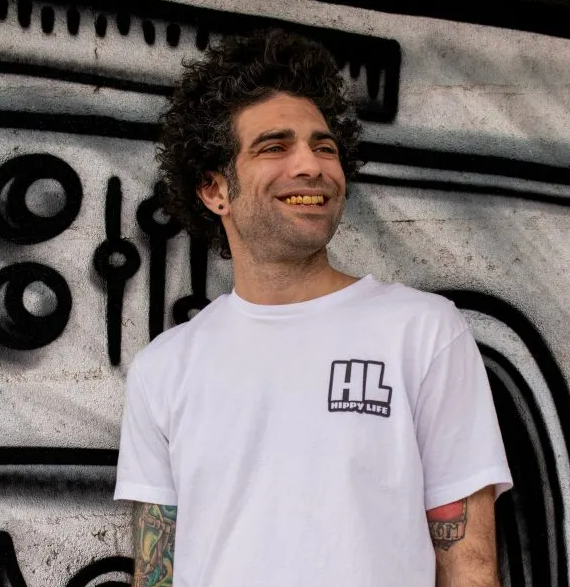

Home
Hobbies
Contact
My Coding Resume
Kyle Field

Summary
I have been working in the website industry for a majority of my career supporting customers and communitcating customer needs to webdesigners.
In doing so, I have learned bits and pieces of code allowing me to do small things here and there. I have decided to lean into that skill set and
formalize my coding eductation with "The Complete 2023 Web Development Bootcamp".
Education
- SIU - Bachelor's of Science, Marketing
- Degree Earned Spring 2006
- UoP - Master's of Business Administration
Work Experience
GoDaddy (Phoenix, AZ) 2013-2023
- QA1 Agent
- Visually checked the design and layout for our customer sites in comparision to the customer requests.
- Provided design coaching to improve overall quality of our designs
- Worked with consultants to confirm that they are requesting what the customers are wanting in a way that makes sense to the webdesigners
- SWAT Team Agent
- Created proccesses to manage email replies for customer requests
- Reviewed customer clarification trends and provided feedback and coaching on these trends.
- Collaborate with design teams, QA teams, and vendor teams to learn best prcatices based on customer feedback
- Developed and implemented trainings for New Hires, Website Specialists, and Vendor teams
- CARE Pilot Agent
- Worked on a three-person team to identify and create workflow process for new software(Jira)
- Worked with production team and vendors to identify and resolve pain points
- Organized and facilitated weekly debriefs
- Coached reps on all of the new processes
Skills
- Jira
- CRM Management
- Zoom Remote Connect
- Adobe Suite
- HTML Coding
- Wordpress
- Network Setup
Awards
- GoDaddy Wayfinder 2020 & 2021
- Las Vegas Cannabis Award Best Podcast 2019 & 2020
- Phoenix Cannabis Award Best Podcast 2021 & 2022
Home
Hobbies
Contact